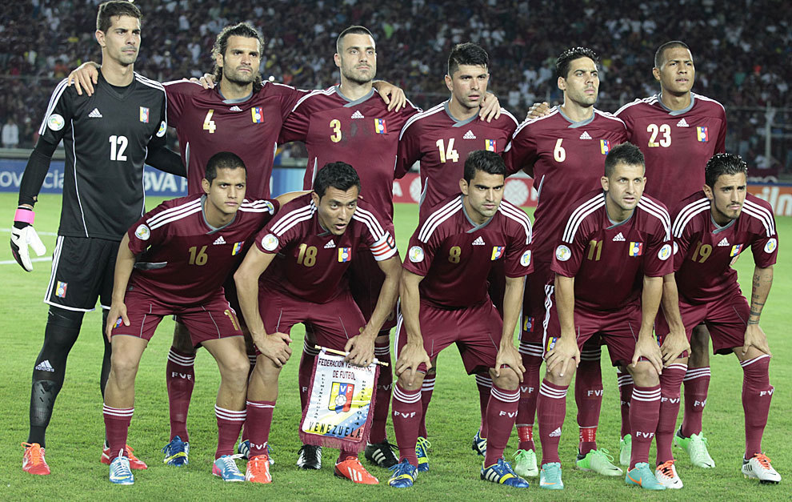

VENEZUELA
La selección de fútbol de Venezuela es, desde su creación en el año 1925, el equipo formado por jugadores de nacionalidad venezolana que representa a la Federación Venezolana de Fútbol (FVF) en las competiciones oficiales organizadas por la Confederación Sudamericana de Fútbol (Conmebol)3 y la Federación Internacional de Fútbol Asociación (FIFA)
